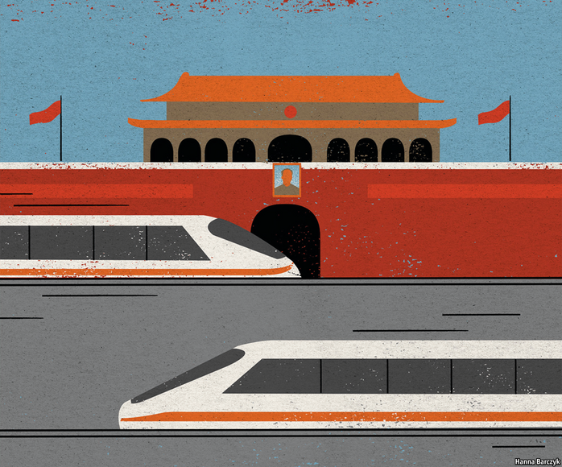

2021-03-11T13:11:13+00:00
Chaguan
茶馆
茶館
Build it and they will go
高铁通，人走空
高鐵通，人走空
China’s high-speed trains enable long-distance commuting. Officials are not sure they approve
中国的高铁让长途通勤成为可能。官员们拿不准是不是赞同这件事
中國的高鐵讓長途通勤成為可能。官員們拿不準是不是贊同這件事
FEW CHILDREN grow up dreaming of being a commuter. But there is a logic to a life spent between a city job and a home in some quiet, affordable spot. The first modern suburbs sprang up to greet trains puffing out of Victorian London. As countries such as Japan, France and Spain invested in high-speed trains, travelling at 250kph or more, new pairs of cities found themselves an hour or so apart, allowing for previously unthinkable commutes.
很少有孩子梦想日后成为一名长途通勤者。但是，在城里工作，在一个宁静的、负担得起开销的地方居住——这样的生活是一种合情理的选择。近代最早的郊区是在维多利亚时代伴随着蒸汽火车从伦敦驶出而出现的。在日本、法国、西班牙等国投资建设时速不下250公里的高铁后，更多城市之间只需一小时左右便可互通，让从前无法想象的通勤成为可能。
很少有孩子夢想日後成為一名長途通勤者。但是，在城裡工作，在一個寧靜的、負擔得起開銷的地方居住——這樣的生活是一種合情理的選擇。近代最早的郊區是在維多利亞時代伴隨着蒸汽火車從倫敦駛出而出現的。在日本、法國、西班牙等國投資建設時速不下250公里的高鐵後，更多城市之間只需一小時左右便可互通，讓從前無法想象的通勤成為可能。
Now it is China’s turn. Planners did not have commuters in mind when they began building the world’s largest high-speed rail system just over a decade ago. They started with national trunk lines and regional spurs, to bind together a vast country and boost growth. Now, with more than 35,000km of lines laid, planners are building more intercity routes, creating conditions for fast, short hops. One study in 2018, using mobile-phone data to track movements, found tens of thousands of people commuting from neighbouring cities into Shanghai, a megalopolis of 24m. Most of them came from Suzhou, a historic city half an hour away by fast train.
现在轮到中国了。十几年前，当规划者开始建设世界上最庞大的高铁网络时，他们并没有把通勤者考虑在内。他们起初是要打造全国性干线铁路和地方性支线铁路，把辽阔的国土联系起来，促进经济增长。如今，随着超过3.5万公里高铁的建成，规划者正在建造更多的城际线路，让短途旅行更加快速、便捷。2018年的一项研究用手机数据追踪人员流动，发现每天有几万人从周边城市去到人口2400万的特大城市上海上班。他们中的大多数来自相距半小时高铁车程的历史名城苏州。
現在輪到中國了。十幾年前，當規劃者開始建設世界上最龐大的高鐵網絡時，他們並沒有把通勤者考慮在內。他們起初是要打造全國性幹線鐵路和地方性支線鐵路，把遼闊的國土聯繫起來，促進經濟增長。如今，隨着超過3.5萬公里高鐵的建成，規劃者正在建造更多的城際線路，讓短途旅行更加快速、便捷。2018年的一項研究用手機數據追蹤人員流動，發現每天有幾萬人從周邊城市去到人口2400萬的特大城市上海上班。他們中的大多數來自相距半小時高鐵車程的歷史名城蘇州。
Last year the Journal of Transport & Health, an international outlet, published a survey of such pioneering riders. The typical respondent was a married man with one or two children, a middling-to-high income and a university degree. Three-quarters became long-distance commuters only after the arrival of high-speed rail. More of them describe intercity travel as a route to a better job than to a higher quality of life. Indeed, many call commuting stressful, and something to do “when they are young”, notes a co-author of the survey, Chia-Lin Chen of the University of Liverpool. China’s high-speed railways do not sell season tickets to commuters, who must often scramble to secure daily tickets on trains meant for long-distance travellers. Moreover, to promote newly built districts, high-speed railway stations are often built far from existing city centres, obliging commuters to travel long distances from stations to workplaces. All this exacts a toll on marriages and families, says Ms Chen.
去年，国际刊物《交通与健康杂志》（Journal of Transport & Health）发表了一份对这些城际通勤先行者的调查报告。他们中的典型成员是有一到两个孩子、中高水平收入和大学学历的已婚男性。四分之三的人是在高铁建成后才开始长途通勤的。多数人表示城际通勤是为了获得更好的工作，而不是更高的生活质量。报告的合著者之一、利物浦大学的陈嘉琳指出，事实上很多人都表示通勤压力大，也就是“现在年轻时”还能应付。中国的高铁主要面向长途旅行者，不出售季票，通勤者常常要靠抢票才能买到每天的车票。此外，为了促进新开发区域的建设，高铁站往往建在远离现有城市中心的地方，所以从高铁站去往工作地点还得走很长一段路。陈嘉琳说，这一切给婚姻和家庭带来了不利影响。
去年，國際刊物《交通與健康雜誌》（Journal of Transport & Health）發表了一份對這些城際通勤先行者的調查報告。他們中的典型成員是有一到兩個孩子、中高水平收入和大學學歷的已婚男性。四分之三的人是在高鐵建成後才開始長途通勤的。多數人表示城際通勤是為了獲得更好的工作，而不是更高的生活質量。報告的合著者之一、利物浦大學的陳嘉琳指出，事實上很多人都表示通勤壓力大，也就是“現在年輕時”還能應付。中國的高鐵主要面向長途旅行者，不出售季票，通勤者常常要靠搶票才能買到每天的車票。此外，為了促進新開發區域的建設，高鐵站往往建在遠離現有城市中心的地方，所以從高鐵站去往工作地點還得走很長一段路。陳嘉琳說，這一切給婚姻和家庭帶來了不利影響。
The Xiao Langfang housing complex is a cluster of apartment blocks in the small, nondescript city of Langfang, 60km from central Beijing. It is an excellent base for commuting—a seven-minute walk from a high-speed railway stop that is, in turn, a 21-minute ride from Beijing South station. The one-way fare is 28 yuan ($4.33). It is a friendly spot. On a mid-week afternoon, its landscaped grounds are thronged with children flying kites, yapping lapdogs and old women playing cards in the winter sun. Above all, here in the northern province of Hebei, just outside Beijing’s city limits, property is cheap. Apartments in Xiao Langfang sell for 15,000 yuan a square metre. A comparable flat in Beijing could easily cost six times as much.
离北京市中心60公里的廊坊是个不起眼的小城市，这里的晓廊坊住宅小区是一个绝佳的通勤据点——步行七分钟便可到达高铁站，然后乘车21分钟到达北京南站。单程票价28元。这里气氛和谐。周中的一个午后，景观带满是放风筝的孩子、汪汪叫的宠物狗，还有冬日阳光下打牌的老太太。最重要的是，河北的这座城市紧邻北京，房价却很便宜。晓廊坊每平米售价1.5万。而在北京，一套类似的房子动辄就是六倍的价格。
離北京市中心60公里的廊坊是個不起眼的小城市，這裡的曉廊坊住宅小區是一個絕佳的通勤據點——步行七分鐘便可到達高鐵站，然後乘車21分鐘到達北京南站。單程票價28元。這裡氣氛和諧。周中的一個午後，景觀帶滿是放風箏的孩子、汪汪叫的寵物狗，還有冬日陽光下打牌的老太太。最重要的是，河北的這座城市緊鄰北京，房價卻很便宜。曉廊坊每平米售價1.5萬。而在北京，一套類似的房子動輒就是六倍的價格。
Shao Zeyu, a young father playing with his five-year-old son in the compound’s gardens, met his wife in Beijing and rented a home with her there for years. They left the capital after their child was born. Mr Shao’s legally registered hometown is Langfang, while his wife is from Tianjin, a nearby coastal city. Mr Shao’s mother lives in Langfang, so she can offer both love and free child care. But the family faced constraints, too. It is very hard to obtain a new household-registration permit, or hukou, from Beijing, a city that Chinese leaders consider full. Without a Beijing hukou, the Shao family could not easily gain access to many public services in that city, including school places. So they left.
年轻的父亲邵泽宇（音译）带着他五岁的儿子在小区花园里玩耍。他和妻子相识于北京，在那里租房子住了几年。孩子出生后，他们搬离了首都。邵先生的户籍在廊坊，妻子来自附近的沿海城市天津。邵先生的母亲住在廊坊，所以她能照顾儿子一家，免费帮他们看孩子。但之前仍有些事比较棘手。中国领导人认为北京的人口已经饱和，所以要在那里落户非常困难。没有北京户口，邵先生一家就很难享受到北京的许多公共服务，包括孩子入学。于是他们离开了北京。
年輕的父親邵澤宇（音譯）帶着他五歲的兒子在小區花園裡玩耍。他和妻子相識於北京，在那裡租房子住了幾年。孩子出生後，他們搬離了首都。邵先生的戶籍在廊坊，妻子來自附近的沿海城市天津。邵先生的母親住在廊坊，所以她能照顧兒子一家，免費幫他們看孩子。但之前仍有些事比較棘手。中國領導人認為北京的人口已經飽和，所以要在那裡落戶非常困難。沒有北京戶口，邵先生一家就很難享受到北京的許多公共服務，包括孩子入學。於是他們離開了北京。
The train has been a boon. Initially, his wife carpooled from Langfang to her job in northern Beijing. She left at 5:30am and reached her desk before most colleagues, allowing her to return home early to see her son. In bad traffic the journey could take three hours each way, and left her exhausted. The fast train to Beijing enables her to leave home at seven. That makes the Shao family lucky. Many friends work such brutal hours, until nine or ten each evening, that they come home only at weekends. Mr Shao himself used to work similar hours for a computer-games firm in Beijing, and is now looking for a job he can do locally. Because Tianjin is affordable and offers better schools and an easier route to university, the family expects to move there when their son is older. Mr Shao’s wife plans to commute by train from Tianjin.
高铁是个福音。一开始，他的妻子拼车从廊坊去北京的北边上班。她早上5点30分离家，比大多数同事都到得早，这样她就能早点下班回家看儿子了。交通拥堵的时候，单程就要花费三个小时，这让她筋疲力尽。现在有了到北京的高铁，她可以在7点离家。这对邵先生一家来说很幸运。他的很多朋友工作非常辛苦，每天忙到晚上九十点，所以只在周末回家。邵先生之前在北京一家电脑游戏公司上班，每天差不多也工作那么久，现在他正在找一份本地的工作。因为天津的生活成本比较低，教育资源更好，以后孩子考大学也更容易，他们期待等儿子大一点就搬到天津去。邵先生的妻子打算到时候从天津乘高铁通勤。
高鐵是個福音。一開始，他的妻子拼車從廊坊去北京的北邊上班。她早上5點30分離家，比大多數同事都到得早，這樣她就能早點下班回家看兒子了。交通擁堵的時候，單程就要花費三個小時，這讓她筋疲力盡。現在有了到北京的高鐵，她可以在7點離家。這對邵先生一家來說很幸運。他的很多朋友工作非常辛苦，每天忙到晚上九十點，所以只在周末回家。邵先生之前在北京一家電腦遊戲公司上班，每天差不多也工作那麼久，現在他正在找一份本地的工作。因為天津的生活成本比較低，教育資源更好，以後孩子考大學也更容易，他們期待等兒子大一點就搬到天津去。邵先生的妻子打算到時候從天津乘高鐵通勤。
In China working nine-to-five is a luxury
在中国，朝九晚五的工作是一种奢侈
在中國，朝九晚五的工作是一種奢侈
Such hyper-mobility is new in China. The government is promoting a new form of urban development that embraces multi-city clusters, including one uniting Beijing and Tianjin. But the aim is to make it more appealing to live in a wider range of secondary cities and new towns, not to create alternative routes to work in central Beijing. In 2016 the Communist Party boss of Hebei said that Langfang “absolutely cannot become a dormitory town for those who work in Beijing”. Indeed, China’s tax system currently punishes commuter towns. Someone who works in Beijing pays taxes and social-security contributions into the capital’s coffers, even when sleeping each night in Langfang. Locals murmur that officials in Langfang blocked moves to call a housing development “Shouzhan”, meaning “First Stop” on the line from Beijing.
这样的超高流动性在中国是新事物。政府正在推动一种新的都市发展形式——创建城市集群。其中就有一个把北京和天津联结起来的城市群。但其目的是吸引人们到更大范围的二线城市和新城镇生活，而不是为到北京市中心工作再添一条路径。2016年，河北省委书记曾表示，廊坊“决不能搞住在河北、回京上班的睡城”。中国目前的税收制度确实会让通勤城镇吃亏。在北京工作的人，即使每晚都住廊坊，也要向首都财库缴纳税款和社保。廊坊的官员们没有批准将一个住宅开发区取名“首站”（意思是高铁开出北京后的“第一站”），对此当地居民颇有微词。
這樣的超高流動性在中國是新事物。政府正在推動一種新的都市發展形式——創建城市集群。其中就有一個把北京和天津聯結起來的城市群。但其目的是吸引人們到更大範圍的二線城市和新城鎮生活，而不是為到北京市中心工作再添一條路徑。2016年，河北省委書記曾表示，廊坊“決不能搞住在河北、回京上班的睡城”。中國目前的稅收制度確實會讓通勤城鎮吃虧。在北京工作的人，即使每晚都住廊坊，也要向首都財庫繳納稅款和社保。廊坊的官員們沒有批准將一個住宅開發區取名“首站”（意思是高鐵開出北京後的“第一站”），對此當地居民頗有微詞。
The authorities in Langfang want new residents to live and work in their city. They recently eased restrictions on outsiders buying property there, allowing them to invest if they make six months’ worth of social-security payments to Langfang’s fund (on top of payments made elsewhere). But Langfang should be realistic, suggests a local property-salesman. He calls his home town a place where newlyweds and those starting families will choose to live until they can afford to move on.
廊坊市政府希望新居民能在本地生活和工作。他们最近放宽了外地人在当地购房的限制，允许他们（在外地缴纳过社保的基础上）在廊坊缴满六个月社保便可买房。但是，一名本地的房地产销售员说，廊坊应该现实一点。他说新婚夫妇和刚有了孩子的家庭会选择在这里暂住，一旦有能力就会搬走。
廊坊市政府希望新居民能在本地生活和工作。他們最近放寬了外地人在當地購房的限制，允許他們（在外地繳納過社保的基礎上）在廊坊繳滿六個月社保便可買房。但是，一名本地的房地產銷售員說，廊坊應該現實一點。他說新婚夫婦和剛有了孩子的家庭會選擇在這裡暫住，一旦有能力就會搬走。
In truth, Langfang’s greatest asset is being a convenient stop on the way to bigger places. That is a puzzle for officials rewarded for developing the place under their charge, not for facilitating the restless ambitions of individuals. China’s high-speed railways are a spectacular economic achievement. Their impact on society may prove as dramatic, if officials allow it.■
其实，廊坊最大的优势就是成为人们通往更大城市的道路上一个便利的落脚点。而这一点对于官员们是一个谜题——因为他们的政绩在于发展辖区经济，而不是让人们更不安于现状。中国的高铁是一项了不起的经济成就。它们对社会的影响可能同样巨大，如果官员们让它发生的话。
其實，廊坊最大的優勢就是成為人們通往更大城市的道路上一個便利的落腳點。而這一點對於官員們是一個謎題——因為他們的政績在於發展轄區經濟，而不是讓人們更不安於現狀。中國的高鐵是一項了不起的經濟成就。它們對社會的影響可能同樣巨大，如果官員們讓它發生的話。